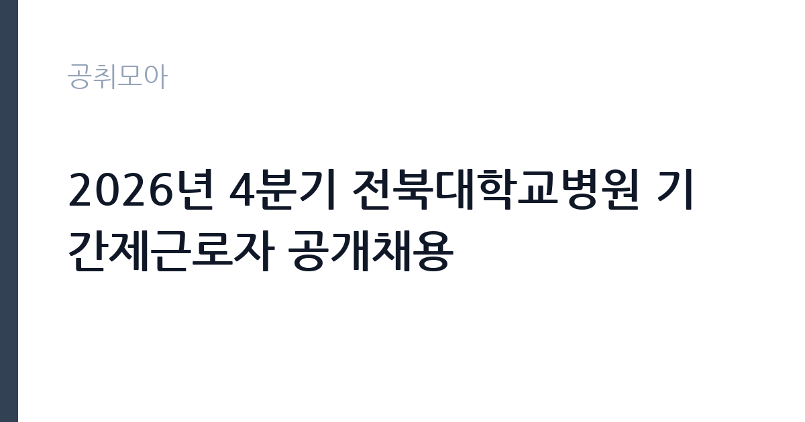

[공공기관] 2026년 4분기 전북대학교병원 기간제근로자 공개채용
전북대학교병원 · 전북 · 마감 2026-11-10 (D-15) · 출처 잡알리오

한눈에 보는 모집 조건
| 기관 | 전북대학교병원 |
|---|---|
| 공고명 | 2026년 4분기 전북대학교병원 기간제근로자 공개채용 |
| 고용형태 | 기간제 |
| 근무지 | 전북 |
| 게시일 | 2026-10-27 |
| 마감일 | 2026-11-10 (D-15) |
지원자격, 이렇게 읽으세요
- 공공기관 채용공시
- 세부 조건은 원문 공고문 확인
기간제 근로자는 근로계약 기간이 정해진 신분입니다. 계약 기간과 갱신 가능 여부가 근로계약서에 명시되며 기간 만료 시 근로관계가 종료됩니다. 결원 보충이나 특정 사업 기간에 맞춰 채용되는 경우가 많아 업무 범위가 명확합니다. 이번 공고는 전북대학교병원가 직접 진행하는 자체 전형입니다. 응시 자격은 공고문의 모집분야별 요건을 기준으로 판단해야 합니다. 같은 공고 안에서도 직무에 따라 학력·전공·경력 요건이 다르게 적용되므로, 본인이 지원할 분야의 요건을 정확히 확인하십시오. 경력은 증명서로 입증해야 하고, 자격증 사본과 졸업증명서가 기본 제출서류로 붙습니다. 우대 사항은 가점으로 반영되므로 해당 여부를 확인해 증빙을 첨부해야 합니다. 결격사유 조회와 신원 확인 절차가 공통으로 적용됩니다. 제출서류는 공고문에 적힌 순서대로 정리하면 담당자가 확인하기 쉽습니다. 경력 요건은 총 경력이 아니라 해당 직무 경력만 인정하는 경우가 있으니, 증명서의 직무 기술을 함께 확인하십시오. 응시 자격 판단이 애매하다면 접수 전에 채용 담당 부서로 문의하는 편이 안전합니다. 서류 제출 후에는 소명 기회가 없습니다. 이 공고 원문에 적힌 응시 조건 문구는 '「부패방지 및 국민권익위원회의 설치와 운영에 관한 법률」 제82조에 따른 비위면직자 등의 취업제한 적용을 받는 자에 해당하지 아니할 것' / '성별·연령·학력 제한은 없으나, 본원 「인사규정」 제53조(정년)에 따라 만 60세 이상자는 지원할 수 없음.'입니다. 문구를 그대로 읽고 본인 해당 여부를 하나씩 표시해 두면 서류 단계에서 탈락하는 일을 줄일 수 있습니다.
이 공고의 포인트
이 건은 전북대학교병원가 같은 시기에 낸 3개 모집분야 가운데 일반 사무·운영 직무입니다. 다른 직무 공고와 요건이 다르므로 지원 전에 모집분야 표를 대조해야 합니다. 이 공고의 첫 번째 포인트는 고용 형태입니다. 계약 기간이 정해져 있어 근무 종료 시점이 명확합니다. 그만큼 짧은 기간에 어떤 실적을 남길지가 중요해집니다. 두 번째는 업무 범위가 명확하다는 점입니다. 일반 사무·운영 직무로 채용되므로 배치 이후 담당 업무가 크게 흔들리지 않습니다. 세 번째는 근무지입니다. 전북 지역 근무로 수도권 공고에 비해 지원자 분포가 넓지 않아 상대적으로 경쟁이 분산되는 경우가 있습니다. 모집 인원이 적은 만큼 지원자 한 명 한 명의 서류 완성도가 당락에 크게 작용합니다. 같은 직무로 함께 올라온 공고 가운데 접수 마감이 가장 늦은 편이라 준비 시간을 상대적으로 확보할 수 있습니다. 선발 인원은 공고문에 명시되어 있으니 모집분야 항목을 함께 확인하십시오.
전형은 어떻게 진행되나
전형은 서류심사와 면접심사를 기본으로 하고 직무에 따라 필기나 실기, 체력검정이 추가됩니다. 서류 단계에서는 응시자격 충족 여부와 제출서류 형식을 확인하며 이 단계에서 탈락하는 지원자가 적지 않습니다. 면접은 직무 이해도와 경험을 확인하는 방식으로 진행되고 발표는 개별 통보나 홈페이지 게시로 이뤄집니다. 최종합격 이후에는 결격사유 조회와 채용 신체검사가 이어지며 이 절차에서 문제가 확인되면 합격이 취소될 수 있습니다. 구체적인 전형 단계와 배점은 공고문에 표로 정리되어 있으니 원문을 기준으로 준비하십시오. 면접조 편성과 대기 시간이 공지되므로 당일 도착 시간을 여유 있게 잡으십시오.
원문에서 확인한 전형 방식
○ 공통사항 - 전북대학교병원 「인사규정」 제25조(결격사유)에 해당하지 아니할 것 - 「부패방지 및 국민권익위원회의 설치와 운영에 관한 법률」 제82조에 따른 비위면직자 등의 취업제한 적용을 받는 자에 해당하지 아니할 것 - 성별·연령·학력 제한은 없으나, 본원 「인사규정」 제53조(정년)에 따라 만 60세 이상자는 지원할 수 없음. - 임용예정일부터 근무가 가능한 사람으로, 지원자 중 남자의 경우 접수 마감일 기준 병역을 마친 자 또는 면제자(단, 「제대군인지원에 관한 법률」 제16조 제2항에 의거 전역예정일 전 6개월 이내에 응시하는 경우는 가능) ○ 분야별 응시자격 - 공고문(첨부파일) 참고
이런 분께 추천해요
- 공고 모집분야의 요건을 충족하는 분
- 사무와 현장 업무를 함께 수행할 수 있는 분
- 부서 배치와 업무 조정을 수용할 수 있는 분
지원 전 체크리스트
- 응시자격 요건과 경력 기준을 충족하는가 — 경력은 증명서로 입증해야 합니다
- 계약 기간과 근무 시작일·종료일을 확인했는가
- 제출서류 목록을 모두 준비했는가 — 누락 시 서류 단계에서 탈락합니다
- 접수 마감 2026-11-10 이전에 접수 방식을 확인해 제출했는가
모집 일정과 제출 타이밍
공고 게시일은 2026-10-27, 접수 마감은 2026-11-10입니다. 준비 기간은 약 14일로 서류 준비와 자격 증빙을 함께 처리하기에는 넉넉하지 않은 편입니다. 첫 이틀 안에 공고문과 첨부 서식을 내려받아 요건을 확인하고 남은 기간에 증빙 서류를 발급받는 일정이 현실적입니다. 면접은 서류 합격자 발표 후 짧은 간격으로 진행되는 경우가 많으므로 서류 제출과 동시에 면접 준비를 시작하는 편이 안전합니다. 마감일에는 접수 시스템이 몰리므로 하루 전까지 제출을 마치는 것이 좋습니다. 서류 발표일과 면접일 사이가 짧은 경우가 많아 면접 준비는 접수와 동시에 시작하는 편이 좋습니다.
직무 이해하기: 공공기관
국립대학병원은 진료와 교육, 연구를 함께 수행하는 공공 의료 기관입니다. 권역 책임 의료 기관으로서 중증 환자 진료와 공공 보건 사업을 운영하고, 행정·원무·보건직 인력을 정기적으로 채용합니다. 병원 특성상 교대 근무와 당직이 포함되는 직무가 많습니다. 이 공고는 제목에 직무가 구체적으로 드러나지 않아 모집분야 항목으로 업무를 확인해야 합니다. 일반적으로는 부서에 배치되어 사무 업무와 현장 지원 업무를 함께 맡습니다. 사무 쪽은 문서 작성과 자료 정리, 예산 집행 보조, 민원 응대가 중심이고, 현장 쪽은 시설 확인과 운영 지원, 행사 준비가 중심입니다. 배치 부서에 따라 업무 비중이 크게 달라지므로 면접에서 희망 분야를 밝히는 것이 좋습니다. 구체적인 직무 내용은 공고문의 모집분야 또는 직무기술서에서 확인하십시오. 근무조는 사업 일정과 기상 상황에 맞춰 편성되므로 면접에서 배치 구역을 확인하는 것이 좋습니다. 직무 교육은 입사 후 기관 자체 계획에 따라 진행되므로 사전 경험이 없어도 시작할 수 있습니다.
자기소개서 작성 팁
지원서는 모집분야를 명확히 밝히고 그 분야에 맞는 경험을 앞세우는 것이 중요합니다. 사무직을 지원한다면 문서 작성과 데이터 정리 경험을, 운영직을 지원한다면 현장 대응 경험을 중심에 두십시오. 기관의 사업을 조사해 어떤 부서에서 일하고 싶은지 구체적으로 쓰면 준비도가 드러납니다. 여러 분야에 두루 걸친 추상적인 서술은 피하십시오. 구성은 지원 동기, 직무 경험, 기여 방안 순서가 무난합니다. 지원 동기는 전북대학교병원의 사업 중 본인이 관심을 가진 부분을 한 가지로 좁혀 서술하고 추상적인 표현은 줄이십시오. 직무 경험은 담당했던 업무와 규모, 결과를 수치로 제시하면 설득력이 올라갑니다. 기여 방안은 입사 후 첫 3개월과 1년 계획으로 나눠 쓰면 준비도가 드러납니다.
면접 준비 포인트
면접에서는 지원 분야에 대한 이해와 업무 처리 방식을 확인합니다. 여러 직무 중 왜 해당 분야를 선택했는지, 맡은 업무를 어떤 순서로 처리할지 묻습니다. 부서 이동이 가능한지에 대한 질문도 자주 나오므로 솔직하게 답하십시오. 사무 경험이 있다면 문서 작성과 엑셀 활용 사례를, 현장 경험이 있다면 안전 관리와 협업 사례를 준비하십시오. 모르는 질문에 추측으로 답하면 감점 요인이 되므로, 확인 후 답하겠다고 밝히는 편이 안전합니다. 면접 당일 신분증과 제출서류 원본을 요구하는 경우가 있으니 공고문의 준비물 목록을 확인하십시오.
급여·근무조건 읽는 법
알리오(공공기관 경영정보 공개시스템) 2025년 결산 경영공시 기준으로 전북대학교병원 일반정규직 1인당 평균보수액은 7,729만원, 공시된 신입사원 초임은 4,008만원입니다. 무기계약직 1인당 평균보수액은 3,661만원으로 공시되어 정규직과 차이가 납니다. 평균보수액은 기본급에 고정수당·실적수당·성과상여금·급여성 복리후생비를 모두 합산한 값이라 월 기본급만 보고 판단하면 실제와 크게 어긋납니다. 이번 공고는 기간제 채용이라 위 정규직 평균보수는 그대로 적용되지 않습니다. 기간제 보수는 기관의 기간제 임금 기준을 따르며 계약 기간이 함께 정해집니다. 보수는 채용 신분과 기관 임금 규정에 따라 정해집니다. 공무직과 기간제는 기관 임금표를, 임기제공무원은 연봉등급제를 적용받습니다. 공고문에 금액이 제시되지 않은 경우에는 처우 항목이나 첨부된 보수표를 확인해야 합니다.수당과 상여 포함 여부에 따라 실수령액이 달라집니다. 2026년 적용 최저임금은 시급 10,320원, 월 환산 2,156,880원(주 40시간·209시간 기준)입니다. 고용노동부 고시 제2025-47호로 확정된 금액입니다. 공고문에 금액이 제시되지 않은 항목은 원문 보수표나 처우 설명에서 확인해야 하며 확인되지 않은 수치는 쓰지 않는 것이 원칙입니다. 비교할 때는 월 급여뿐 아니라 상여·명절휴가비·복지포인트·초과근무수당까지 포함한 연간 총액으로 계산하십시오. 기간제라면 계약 기간 동안의 총액을, 무기계약이라면 호봉 상승과 정년까지의 누적 소득을 기준으로 판단하는 편이 정확합니다.
자주 묻는 질문
- 선발 인원은 몇 명인가요?
공고문의 모집분야 항목에 직종별 인원이 표로 제시되어 있습니다. 첨부된 공고문 원문에서 확인하십시오. - 근무지는 어디인가요?
전북 지역의 전북대학교병원 소속 근무지입니다. 세부 주소와 출퇴근 조건은 원문 공고문에서 확인할 수 있습니다. - 보수는 얼마인가요?
채용 신분(기간제)과 기관 임금 규정에 따라 정해지며 구체적인 금액은 공고문 처우 항목에 제시됩니다. 금액이 공개되지 않은 경우에는 원문의 보수표를 확인하십시오.
함께 보면 좋은 공고
[공공기관] 한국도로공사 대전충남본부 관내 지사(천안, 대전, 영동, 당진, 공주, 부여) 제설 기간제근로자(정비원) 채용 — 마감 2026-11-03[공공기관] 한국도로공사 대전충남본부 관내 지사(천안, 대전, 영동, 당진, 공주, 부여) 제설 기간제근로자(운전원) 채용 — 마감 2026-11-03[공공기관] 한국도로공사 대전충남본부 관내 지사(천안, 대전, 영동, 당진, 공주, 부여) 제설 기간제근로자(도로관리원) 채용 — 마감 2026-11-03출처: 잡알리오 공개정보를 바탕으로 공취모아가 정리한 안내글입니다. 모집 조건·일정은 변경될 수 있으니 지원 전 반드시 원문 공고문을 확인하세요. 본 글은 정보 제공용이며 합격을 보장하지 않습니다.